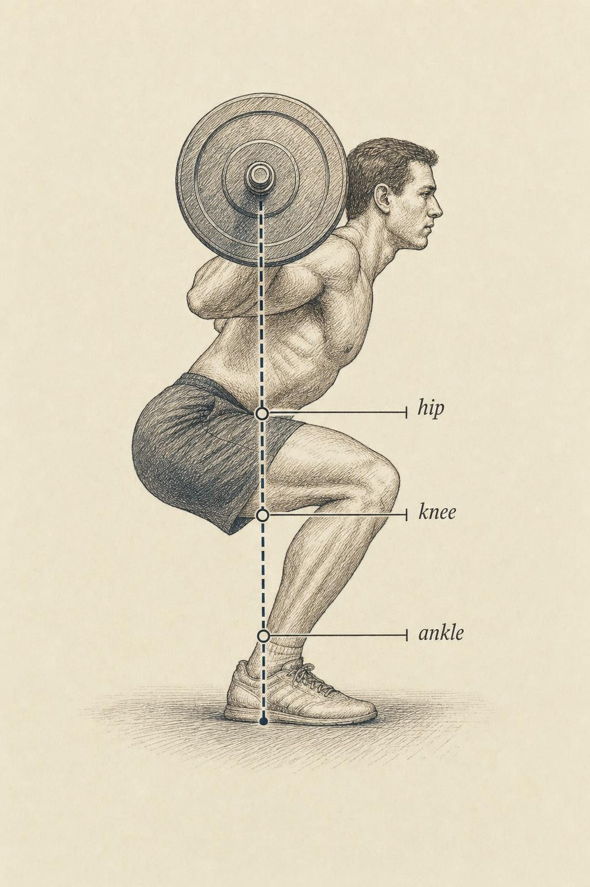
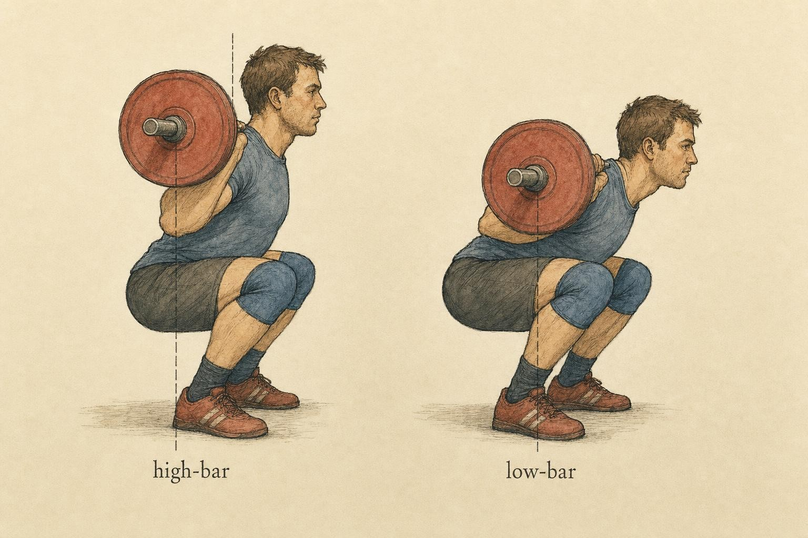

The Squat: Why Yours Doesn't Look Like Mine
Moment-arm logic meets the barbell — and dismantles one-size-fits-all cueing.
Put two lifters under two barbells and ask them to squat. One folds forward at the hips, chest angled toward the floor, the bar riding low across the rear deltoids. The other stays nearly vertical, knees sliding well past the toes, the bar perched high on the traps. Both hit depth. Both stand up. Both, if you filmed them, would be told by some corner of the internet that they are doing it wrong.
They are not doing it wrong. They are doing different — and the difference is not aesthetic, or a matter of "style," or a failure of discipline. It is mechanics. By the end of this chapter you will be able to look at either lifter and explain, in the language of moment arms and external torque, exactly why their squat looks the way it does.
One movement, three joints, one job
The squat is the first full case study in this course because it makes the moment-arm reasoning we built in Chapters 2 through 4 unavoidably visible. Strip away the cues and the mythology and the squat is a single mechanical event: a coordinated rotation at the hip, knee, and ankle, orchestrated so that the whole-body center of mass stays balanced over the base of support while the barbell travels up and down.
Because gravity acts vertically, the load the bar imposes on any joint is not its weight but its weight multiplied by the horizontal distance from that joint's axis of rotation to the bar's vertical line of gravity. That horizontal distance is the moment arm, and the product is the external torque the joint's musculature must overcome. Nothing about the squat is mysterious once you commit to tracking those three moment arms — hip, knee, ankle — frame by frame through the descent.
Here is the essential move. As you descend, the shank tilts forward and the thigh folds, and the joints migrate horizontally relative to the barbell's fixed vertical line. The hip travels backward and away from the line; the knee travels forward. The horizontal gaps grow. Torque climbs at every joint simultaneously, peaking near the bottom. This is why the hole — the deepest position — feels the hardest. It is not weakness of will or a "sticking point" born of bad nerves; it is the moment when the moment arms are stacked most brutally against you.

The three moment arms of the deep squat, measured horizontally from each joint to the bar's line of gravity." data-image-idx="0" style="display:block;max-width:100%;max-height:75vh;height:auto;width:auto;margin:0 auto;cursor:pointer;">The bar wants to be over the mid-foot
Everything above depends on one anchoring fact: the barbell's vertical line of gravity passes, near enough, through the mid-foot for the entire lift. This is not a coaching preference; it is a balance requirement. Your base of support is the contact patch of the feet, and the whole system stays in equilibrium only when the combined line of gravity of body-plus-bar falls inside that patch. Because the loaded barbell dominates the system's mass, keeping the bar over the mid-foot keeps the whole thing balanced.
Schoenfeld (2010), synthesizing the squat kinematics literature, frames the movement precisely as a problem of keeping the line of gravity over the base of support while distributing the load across the ankle, knee, hip, and spine. Once you accept the mid-foot constraint, a great deal follows automatically. If the bar sits high on the trapezius, the trunk must stay relatively upright to keep the bar stacked over mid-foot — which drives the knees forward and loads them. If the bar sits low across the rear deltoids, the trunk must incline forward to bring that lower bar position back over mid-foot — which drives the hips back and loads them. The lifter does not "choose" trunk lean freely; trunk lean is largely dictated by where the bar sits and the demand that it track over the mid-foot.
Straub and Powers (2024), in their clinical biomechanical review, make this the organizing principle of the whole exercise: the sagittal-plane orientation of the trunk and the tibia governs the external moments at the hip and knee. Change one and you change the other, because both are subordinate to the same balance constraint. You cannot make the squat easier on the knees and the hips at once; you can only move the burden around.
Hip versus knee: the load has to go somewhere
The single most clarifying study in the whole squat literature is a small one. Fry, Smith, and Schilling (2003) simply had lifters squat two ways: once allowing the knees to travel forward naturally, and once with a wooden barrier that forced the shins to stay vertical — the classic "don't let your knees pass your toes" cue made physical. When forward knee travel was restricted, knee torque dropped dramatically. That is the result the cue promises, and it is real.
But the lifters still had to reach depth, and they still had to keep the bar over the mid-foot. With the shins locked vertical, the only way to descend was to shove the hips backward and pitch the trunk sharply forward — which drove hip torque up enormously, roughly ten-fold in their measurements. The load was not eliminated. It was transferred, wholesale, from the knees to the hips and, by extension, to the lumbar spine.
This is the mechanical heart of the chapter. Illmeier and Rechberger (2023) reviewed the decades of anthropometric and biomechanical evidence and reached the same verdict: restricting anterior knee displacement does not make the squat safer in any absolute sense — it redistributes torque toward the hip and lumbar spine, and for many trained individuals a natural forward knee travel is simply necessary to squat at all. The "knees behind toes" rule is not a law of good movement; it is a decision to prefer hip loading over knee loading, made without knowing whose knees or hips you are talking about.
Escamilla's (2001) comprehensive review of knee biomechanics adds the reassuring counterweight. Across tibiofemoral shear, patellofemoral compression, and muscle activity, he concluded that the dynamic squat, performed within an individual's honest range, is an effective and generally knee-friendly way to develop the whole lower limb — and can enhance knee stability rather than threaten it. Forward knee travel is not a hazard to be engineered away; it is part of how the mechanics are meant to work. Where it provokes pain, that is information for a qualified professional, not a verdict on the movement itself.
High-bar, low-bar, and the geometry of the back
Nowhere is torque redistribution more legible than in the difference between the two back-squat styles. Glassbrook and colleagues (2017) systematically reviewed the biomechanical comparisons and found a consistent picture. The high-bar back squat, with the bar resting on the upper trapezius, produces greater knee flexion, a more upright torso, and typically a deeper squat. The low-bar back squat, with the bar carried lower on the posterior deltoids, produces greater forward trunk lean, which lengthens the hip moment arm and shifts the emphasis toward the hip extensors — a configuration that often permits heavier loads.
Return to the mid-foot constraint and this falls out for free. Lower the bar on the back and, to keep that lower point over the mid-foot, the trunk must incline further forward. The forward trunk drives the hips back, lengthening the hip moment arm and shortening the knee moment arm. High-bar does the reverse. Neither is more correct. They are two solutions to the same balance problem that happen to distribute torque differently — which is exactly why a powerlifter chasing a maximal total and a weightlifter training the catch position select different bar positions on purpose.

Two solutions to one balance problem: bar height dictates trunk lean, and trunk lean redistributes torque between hip and knee." data-image-idx="1" style="display:block;max-width:100%;max-height:75vh;height:auto;width:auto;margin:0 auto;cursor:pointer;">Why individual variation is the whole point
We have been treating the lifter as adjustable — change the bar height, change the trunk lean. But the deepest source of variation is not adjustable at all: it is the skeleton you brought to the platform. Four anthropometric variables reshape the torque distribution before you have loaded a single plate.
Segment lengths
A long femur relative to the torso is the classic case. The longer the thigh, the further the hips must travel backward to keep the system balanced, and the more the trunk must incline forward to keep the bar over mid-foot. The long-femured lifter therefore squats with a more horizontal trunk and a hip-dominant torque profile — not because they are lazy or lack "core stability," but because their geometry demands it. A long torso partly offsets this; a short torso amplifies it.
Hip socket orientation and mobility
The depth to which a lifter can squat honestly — recall Chapter 2's insistence on real ranges of motion rather than idealized ones — depends heavily on the orientation of the acetabulum and the shape of the femoral neck, which vary substantially between individuals. This is why some lifters find a wide stance with turned-out toes liberating and others find it obstructive. Lorenzetti and colleagues (2018), using 3D motion capture and force plates across nine combinations of stance width and foot angle, confirmed that both variables significantly alter hip and knee joint moments in the sagittal and frontal planes — and that experience level modulates how the knees track. There is no universally optimal stance because there is no universal hip.
Ankle mobility
The ankle sets how far the knee can travel forward. Limited dorsiflexion caps forward shank travel, which — by the same mid-foot logic — forces the hips back and the trunk down, pushing torque toward the hip. This is the mechanical rationale behind a heel-elevated shoe: raising the heel effectively extends the available dorsiflexion, letting the knee travel forward, the trunk stay upright, and torque shift back toward the knee. The shoe does not "cheat"; it rebalances.
It would be tidy to conclude that segment lengths alone predict how someone squats. The evidence resists that tidiness. Kim and colleagues (2021), examining femur-to-tibia length ratios alongside hip and ankle flexibility and relative strength during squats at 75% of one-repetition maximum, found that net joint torques and flexion angles correlated more strongly with relative muscular strength and joint flexibility than with segment-length ratios. Anthropometry sets the terrain, but mobility and strength determine how a given lifter actually negotiates it. The honest model is multivariable — which is precisely why "correct form" cannot be a single template.
The strength curve, revisited
Chapter 4 gave us the tools to describe a lift's strength curve — how the external torque, and therefore the difficulty, changes across the range of motion. The squat's curve now writes itself. External moment arms at all three joints grow as you descend and peak near the bottom, then shrink as you rise. That is why the squat is an ascending-difficulty movement in the region that matters: hardest out of the hole, progressively easier toward lockout, where the moment arms collapse toward zero and the joints stack nearly under the bar.
Layer onto that Chapter 3's lines of pull. Which muscles dominate depends on which joint carries the torque at a given angle, and that shifts continuously. Near the bottom the knee extensors and hip extensors are both heavily engaged; as the trunk rises and the hip moment arm shortens faster than the knee's, the emphasis migrates. A low-bar squatter, with a longer hip moment arm throughout, leans more on the hip extensors across the whole ascent than a high-bar squatter lifting the same load. The "which muscle does the squat work" question has no single answer because the answer is a function of joint angle, bar position, and skeleton — three of this course's recurring variables converging on one lift.
Restricting anterior knee displacement does not remove load from the body; it relocates it. The relevant question is never whether a joint is loaded, but which joint, for which lifter, and whether that lifter's tissues are prepared for it.
Paraphrasing Fry et al. (2003) and Illmeier & Rechberger (2023)
When the mechanics produce pain
A steady discipline runs through this chapter: we explain the mechanics, we do not diagnose. Forward knee travel, a heel that lifts under load, a spine that rounds at depth — each is a mechanical observation with a mechanical explanation, and each can, in some individuals, coincide with discomfort. When it does, the appropriate response is professional evaluation by a qualified clinician, not a rule scraped from a forum. Our job is the working model: to explain why a lifter's knees travel forward, why their trunk pitches down, why their heels want to rise — so that whoever does the evaluating starts from mechanics rather than mythology. Understanding that a restrictive cue transfers torque rather than deleting it is exactly the kind of insight that keeps an applied practitioner from confidently making a problem worse.
Key Takeaways
- The squat is one coordinated rotation at hip, knee, and ankle, all subordinate to keeping the bar's line of gravity over the mid-foot for balance.
- External torque at each joint equals bar load times that joint's horizontal moment arm; all three moment arms peak near the bottom, which is why the hole is hardest.
- Torque is conserved, not created or destroyed by cueing: restricting knee travel slashes knee torque but spikes hip and lumbar torque (Fry et al., 2003; Illmeier & Rechberger, 2023).
- Bar height dictates trunk lean via the mid-foot constraint — high-bar loads the knee more, low-bar loads the hip more (Glassbrook et al., 2017; Straub & Powers, 2024).
- Femur and torso length, hip and ankle mobility, stance, and strength all reshape the torque distribution; segment lengths set the terrain, but strength and flexibility often predict joint torques more strongly (Kim et al., 2021; Lorenzetti et al., 2018).
- "Correct" squat form is a family of mechanically valid solutions, not a single template — and pain is a signal for professional evaluation, not a verdict on the movement.
The squat's hip mechanics were only half a comparison. In Chapter 6 we set the squat beside the hinge — the deadlift and its relatives — where the trunk lean we treated as a consequence becomes the defining feature, and the hip moment arm takes center stage. Watching the same moment-arm logic produce two very different-looking lifts will sharpen everything you learned here, and it lays the groundwork for Chapter 9, where individual variation stops being a footnote and becomes the explicit subject.
References
Escamilla, R. F. (2001). Knee biomechanics of the dynamic squat exercise. Medicine & Science in Sports & Exercise, 33(1), 127–141. https://doi.org/10.1097/00005768-200101000-00020
Fry, A. C., Smith, J. C., & Schilling, B. K. (2003). Effect of knee position on hip and knee torques during the barbell squat. Journal of Strength and Conditioning Research, 17(4), 629–633. https://doi.org/10.1519/1533-4287(2003)017<0629:EOKPOH>2.0.CO;2
Glassbrook, D. J., Helms, E. R., Brown, S. R., & Storey, A. G. (2017). A review of the biomechanical differences between the high-bar and low-bar back-squat. Journal of Strength and Conditioning Research, 31(9), 2618–2634.
Illmeier, G., & Rechberger, J. (2023). The limitations of anterior knee displacement during different barbell squat techniques: A comprehensive review. Journal of Clinical Medicine, 12(8), 2955. https://doi.org/10.3390/jcm12082955
Kim, S., Kim, S., & Lee, J. (2021). Relationships between physical characteristics and biomechanics of lower extremity during the squat. Journal of Exercise Science & Fitness, 19(4), 269–277. https://doi.org/10.1016/j.jesf.2021.09.002
Lorenzetti, S., Ostermann, M., Zeidler, F., Zimmer, P., Jentsch, L., List, R., Taylor, W. R., & Schellenberg, F. (2018). How to squat? Effects of various stance widths, foot placement angles and level of experience on knee, hip and trunk motion and loading. BMC Sports Science, Medicine and Rehabilitation, 10, 14. https://doi.org/10.1186/s13102-018-0103-7
Schoenfeld, B. J. (2010). Squatting kinematics and kinetics and their application to exercise performance. Journal of Strength and Conditioning Research, 24(12), 3497–3506. https://doi.org/10.1519/JSC.0b013e3181bac2d7
Straub, R. K., & Powers, C. M. (2024). A biomechanical review of the squat exercise: Implications for clinical practice. International Journal of Sports Physical Therapy, 19(4). https://doi.org/10.26603/001c.94600